CS 463G & CS 663
(Intro to) AI
Lecture 15: CSP Search
Fall 2026
After Constraint Propagation
A constraint satisfaction problem (CSP) asks for values that satisfy every constraint. Propagation reduces domains, but may leave choices.
| Any domain is empty |
Reject the current branch |
| Every domain is a singleton (one value) |
Verify the complete assignment against every constraint |
| Some domains have multiple values |
Choose a variable and try a value |
Backtracking search tries a choice, continues recursively, and undoes the choice if the branch fails.
An empty domain after a tentative choice rules out that branch. Search can still try other choices.
A Three-Exam Search Problem
Exams A, B, C all share students, so every pair must use different slots.
D_A=D_B=\{1,2\},\qquad D_C=\{2,3\}.
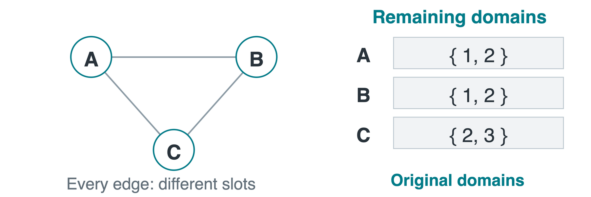
If we try C=2, have we violated a constraint among assigned exams? No. A and B are still unassigned.
A Backtracking Trace
Choose variables in the order C, A, B, trying smaller values first. The tree records choices; the triangle records constraints.
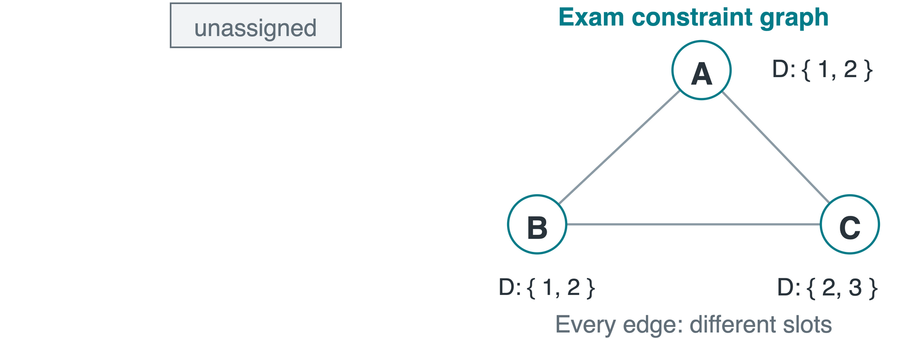
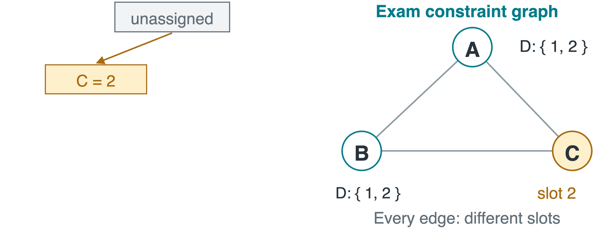
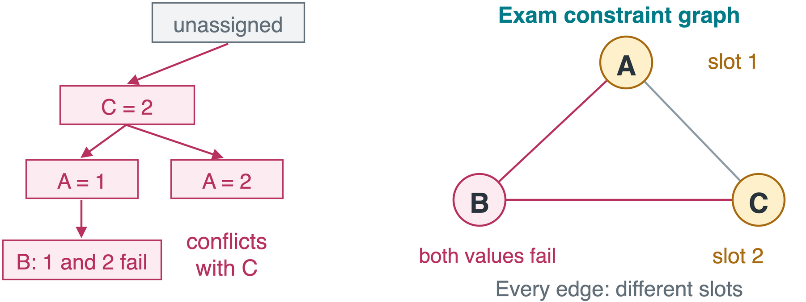
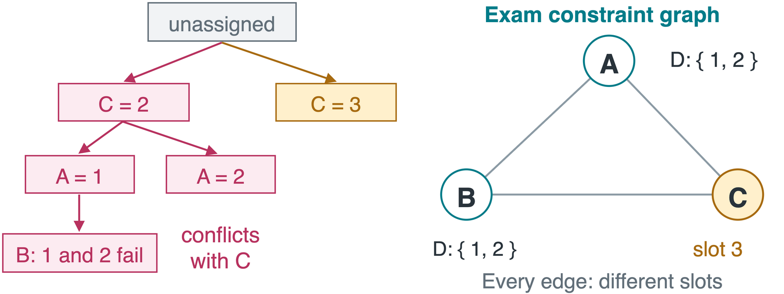
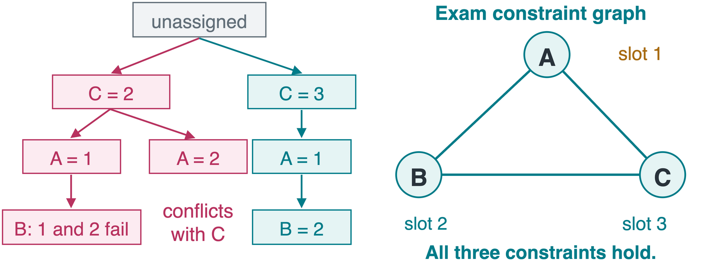
2. A=1 leaves B no legal value. A=2 also conflicts with C.
3. Undo A and C, then try C=3.
4. A=1,\ B=2,\ C=3 satisfies every constraint.
Assignment Order and Commutativity
Assigning A=1 then B=2 gives the same partial assignment as assigning them in the opposite order.
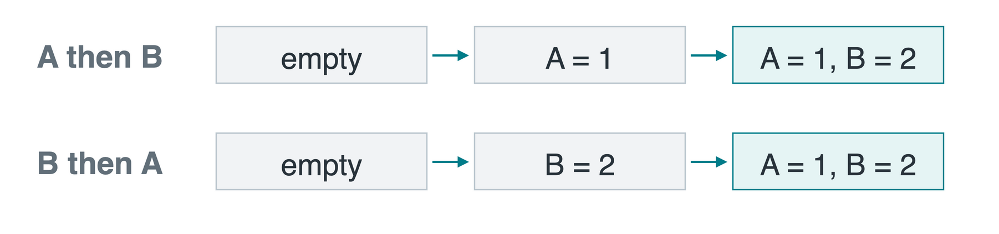
Let n count variables and d be the largest domain size. After k assignments, n-k variables remain.
- Branching over variable-value pairs gives up to (n-k)d choices.
- Selecting one variable first gives up to d value choices.
One variable per level avoids repeated assignment orders.
Basic Backtracking
a is a consistent partial assignment, D stores domains, and C stores constraints. Start with a=\{\}.
BACKTRACK(a, D, C):
if a is complete: return COPY(a)
X ← SELECT_UNASSIGNED(a)
for v in D[X]:
if CONSISTENT(X, v, a, C):
a[X] ← v
result ← BACKTRACK(a, D, C)
if result != FAILURE: return result
REMOVE(a, X)
return FAILURE
CONSISTENT checks constraints whose variables have all received values. REMOVE undoes X’s tentative assignment.
Search with Inference
After trying X=v, restrict D_X to \{v\}, then remove values ruled out by the constraints.
| Check assigned values |
Reject an immediate conflict with earlier assignments |
| Forward checking |
Delete incompatible values from unassigned neighbors |
| Maintaining arc consistency (MAC) |
Propagate deletions through the remaining constraint graph |
AC-3 (Arc Consistency Algorithm 3) can implement MAC by continuing to recheck affected arcs.
Forward checking looks one step from the new assignment. MAC also follows the effects of those deletions.
Forward Checking and MAC
Return to the three exams. Every edge requires different slots. Try C=2.
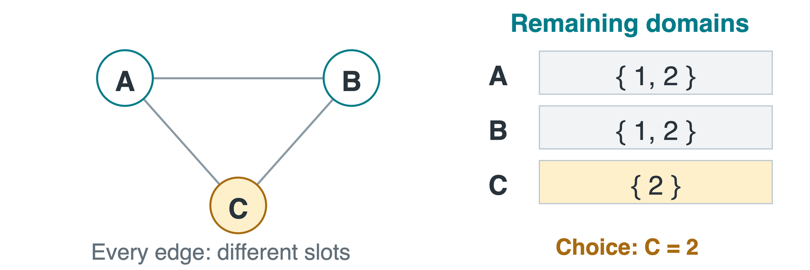
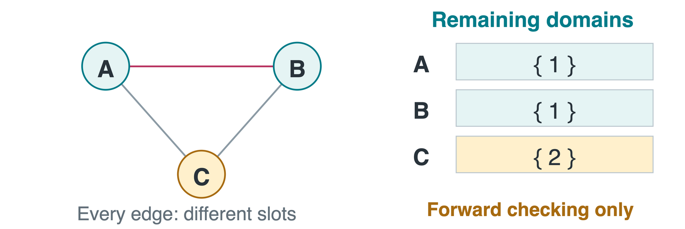
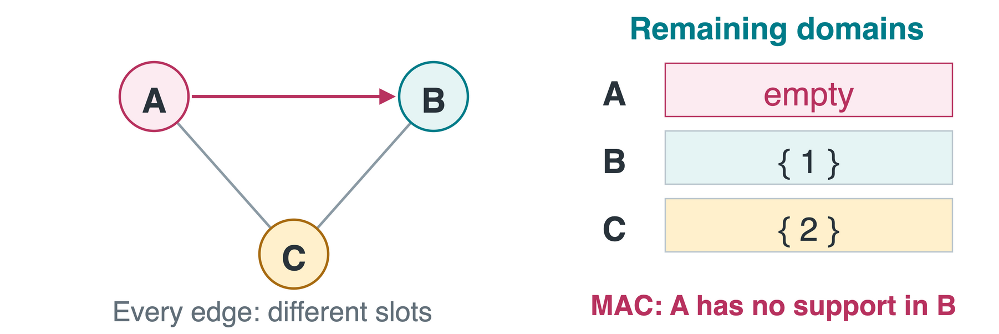
Forward checking: D_A=D_B=\{1\}. Neither domain is empty yet.
MAC: revise (A,B). Value 1 has no unequal support, so D_A=\varnothing.
Propagation detects that the choice C=2 has no completion, before search assigns A and B.
Restoring a Failed Branch
The failed choice C=2 deleted values from several domains. Changing C alone does not repair the search state.
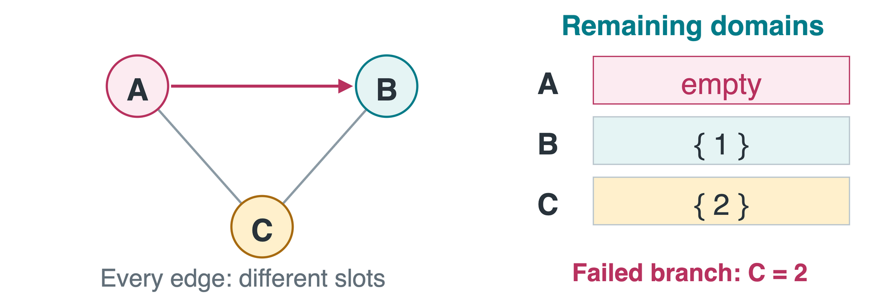
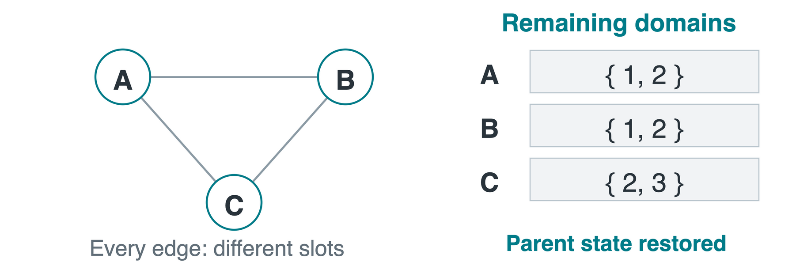
Restore the parent’s domains, then try C=3. The deletions belonged to the discarded branch.
Two common implementations: give each branch its own deep copy, or record deletions and undo them on return.
Minimum Remaining Values
Minimum remaining values (MRV) selects the unassigned variable with the fewest current legal values.
A new four-exam example uses the edges shown below. All four exams are unassigned.
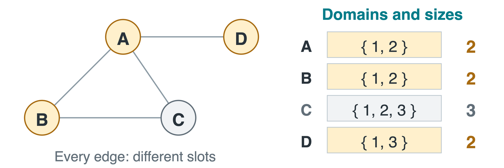
A, B, and D tie with 2 values. C has 3. Resolve a tie with another rule.
A singleton is forced. An empty domain signals failure. MRV often exposes difficult choices early.
The Degree Tie-Breaker
For an MRV tie, the degree heuristic prefers the variable constraining the most other unassigned variables.
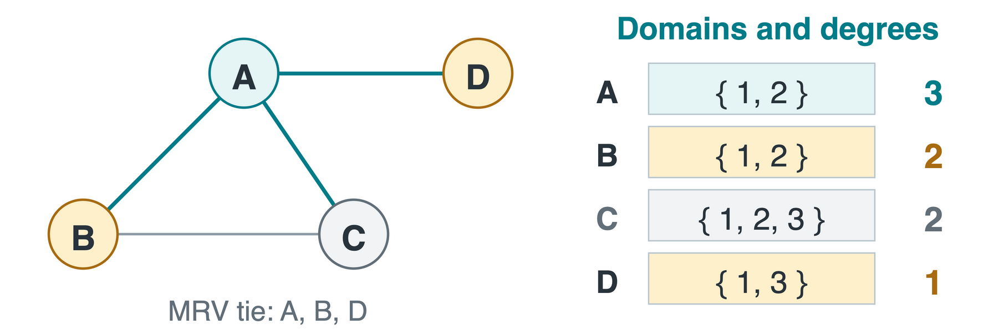
Which of A, B, and D should be selected? A: degrees are A: 3, B: 2, D: 1.
Most constrained: fewest values. Most constraining: most unassigned neighbors.
Least-Constraining Value
Least-constraining value (LCV) preserves the most neighbor options. In our three-exam problem, select C and compare forward-checking deletions.
| 2 |
\{1\} |
\{1\} |
2 |
| 3 |
\{1,2\} |
\{1,2\} |
0 |
LCV tries C=3 first, avoiding the earlier failed branch.
Backtracking with Heuristics and AC-3
For a binary CSP, SOLVE uses domains as its state. CHECK_SOLUTION verifies every constraint and returns the assignment or FAILURE.
SOLVE(D, C):
if any D[X] is empty: return FAILURE
if all domains are singleton: return CHECK_SOLUTION(D,C)
X ← MRV_WITH_DEGREE(D, C)
for v in LCV_ORDER(X, D, C):
child ← DEEP_COPY(D)
child[X] ← {v}
if AC3(child, C):
result ← SOLVE(child, C)
if result != FAILURE: return result
return FAILURE
Each branch gets its own domains. If it fails, discard that copy and try the next value using the intact parent state.
Backjumping and Constraint Learning
A separate example assigns A=1,\ B=2,\ T=1, in that order. D_X=\{1,2\}, with rules X\ne A and X\ne B. T is unrelated.
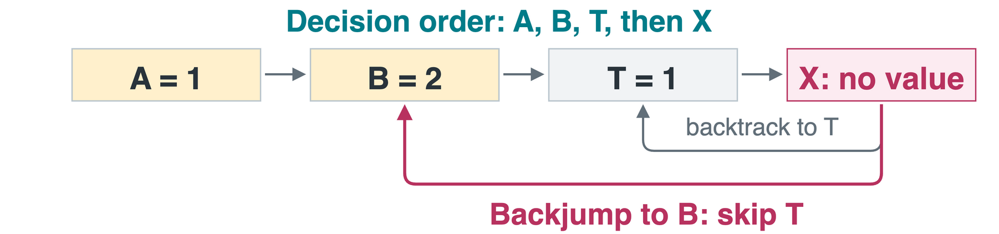
- Conflict set: earlier choices that explain a failure. Here it is \{A=1,B=2\}.
- Backjumping: revisit the most recent decision in that set, so change B before trying an unrelated T value.
- Constraint learning: remember a no-good, a partial assignment that cannot lead to a solution. Here, forbid the combination A=1,\ B=2.
Complete Search and Local Repair
A CSP can also be approached through the local-search methods from Lecture 11.
| Backtracking |
A partial assignment |
Reject choices and return to earlier decisions |
| Min-conflicts |
A complete assignment that may violate constraints |
Change a conflicted variable to a value with fewer conflicts |
Min-conflicts can solve large instances quickly, but may get stuck or need restarts.
For finite domains, exhaustive backtracking can prove that no solution exists. A failed local-search run generally cannot.
Sudoku Notebook
Each blank is a variable. Row, column, and 3\times3 box constraints forbid repeated digits.
- is_valid: test a digit against its row, column, and box.
- solve: choose the first blank, recurse, and reset it to zero after failure.
- infer: remove an assigned digit from peer domains.
- solve_reduce: propagate, select with MRV, and try copied domains.
For general search, a guess must restrict its domain, and a failed branch must restore the previous state.
Takeaways
- Backtracking tries choices and returns when a branch fails.
- Forward checking and MAC prune after each choice.
- MRV chooses a variable with few remaining values.
- The degree heuristic breaks ties using remaining neighbors.
- LCV tries values that preserve more options.
- Every failed branch must restore its assignments and domains.
A reliable solver combines correct state management with good branching choices and useful propagation.
Open the Sudoku notebook
Asset credits